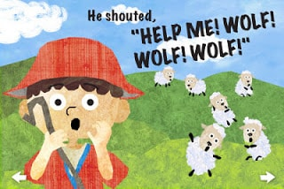

There was once a shepherd boy who liked to play tricks. One day, while he was watching over the herd, the boy decided to play a trick and cried “wolf! wolf!”. The people who heard rushed over to help him. But theyWritten by Unknown.waswere disappointed when they saw that there was no wolf and the boy was laughing at them. The next day, he did it again and people rushed to his aid only to be disappointed once again. On the third day, the boy saw a wolf devouring one of his sheep and cried for help. But the people who heard him thought this is just another of the boy’s pranks so no one came to help him.
That day, he lost some of his sheep to the wolf.
If you always lie and cheat on other people,
there will come a time when no one will believe you anymore.